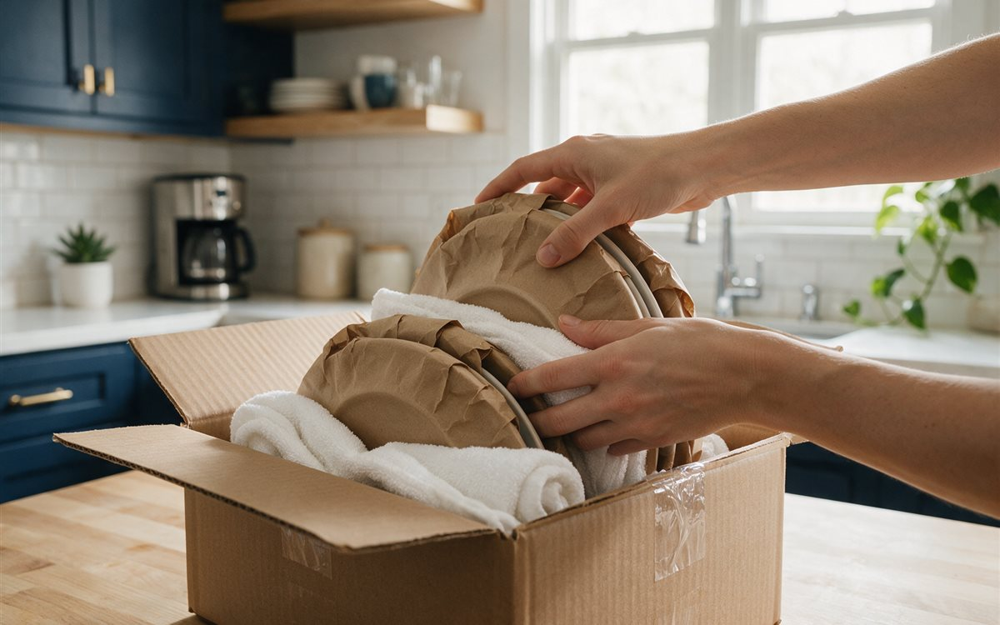
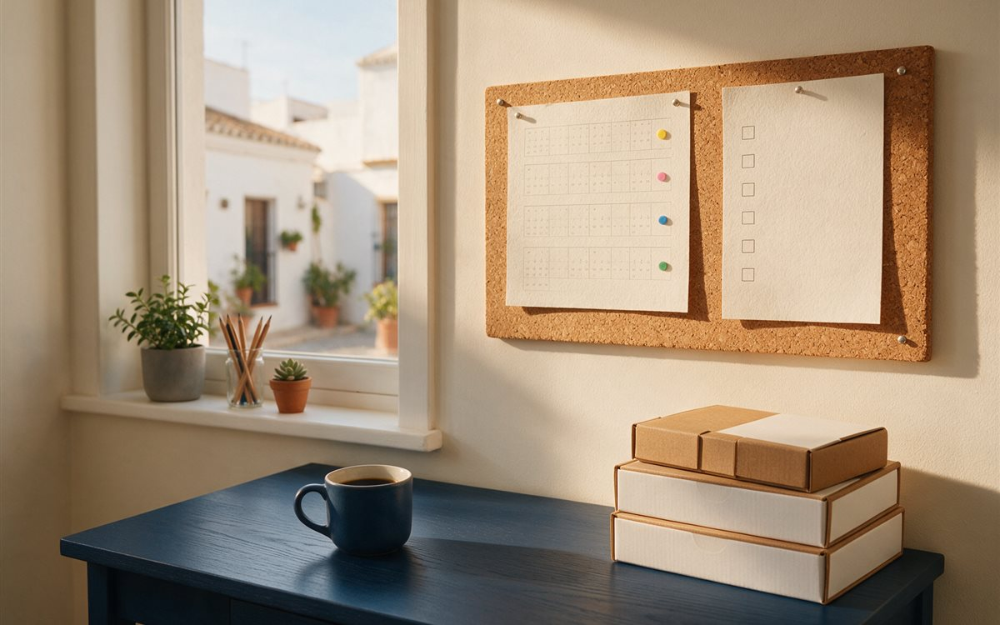

Una mudanza no se encarece solo por los kilómetros o por la cantidad de muebles. Casi siempre la factura sube por cosas que nadie contó al pedir el presupuesto: un trastero olvidado, un portal al que el camión no llega, un armario que solo sale desmontado. La buena noticia es que casi todo se puede evitar si lo dejas claro antes.
Los errores que más encarecen una mudanza
- «Tengo pocos muebles». Es lo que más se oye, y luego aparecen el canapé, el colchón grande, la mesa desmontada, veinte cajas y lo que hay en el trastero. El volumen decide el camión, los operarios y las horas, así que ahí es donde se desvía el precio. Un truco sencillo: da una vuelta por la casa grabando un vídeo con el móvil, sin olvidar armarios ni trastero, y enséñaselo a quien te presupueste.
- No avisar de los accesos. Un cuarto sin ascensor, un ascensor pequeño, una calle estrecha o peatonal, o no tener dónde aparcar cerca del portal pueden convertir una mudanza sencilla en una mucho más lenta. Cuando el camión no llega al portal, todo hay que acarrearlo a mano y eso son horas.
- Dar por hecho que el sofá, los armarios grandes o el piano «ya pasarán». Que un sofá quepa en el salón no significa que pase por el rellano. Los armarios grandes a veces solo salen desmontados, y un piano no es un mueble más: hay que avisar antes, porque necesita personal y medios distintos.
- Olvidarse del trastero. Suele ser lo último que se cuenta y lo que más sorprende: poco espacio para moverse, cajas antiguas sin saber qué llevan y objetos que ya nadie quiere. Si puedes, clasifica y tira lo que sobra antes de que llegue el equipo.
- Pensar que desmontar y montar está incluido. Camas, armarios y muebles modulares llevan tiempo y herramientas. Pregunta qué muebles entran en el servicio y cuáles tienen coste aparte.
- Tener las cajas sin preparar el día de la mudanza. Si el equipo tiene que esperar mientras terminas de embalar, ese tiempo cuenta, sobre todo si se cobra por horas.
- Confundir un precio orientativo con uno cerrado. Es de los líos más frecuentes. Si no se aclara antes, el precio puede cambiar el mismo día de la mudanza.
Tres preguntas que conviene hacer antes de aceptar un presupuesto
- ¿El precio es cerrado o puede variar?
- ¿Qué pasa si el volumen real es mayor que el que he declarado?
- ¿Qué ocurre si el camión no puede acercarse al portal, en la salida o en la llegada?
Mejor resolverlo por escrito antes del día de la mudanza que con el camión ya cargado.
Antes de empaquetar
- Deshazte de lo que no uses. Vender, donar o reciclar reduce volumen, y cada metro cúbico menos baja el presupuesto.
- Haz un inventario de lo que te llevas: te servirá para pedir presupuestos comparables.
- Pide al menos tres presupuestos cerrados con el mismo inventario y las mismas condiciones, y compara qué incluye cada uno. Dos presupuestos pueden parecer muy distintos solo porque uno incluye desmontaje, protección y montaje y el otro no.
Cómo llenar las cajas
- Cajas pequeñas para lo pesado (libros, vajilla) y grandes para lo ligero (ropa de cama, cojines). Una caja enorme llena de libros es incómoda y puede romperse.
- Lo más pesado, abajo; lo frágil, arriba y con papel, toallas o ropa en los huecos para que no se mueva.
- Cierra bien con cinta y no sobrecargues: una caja que no puedes levantar con comodidad está demasiado llena.
- Etiqueta por destino, no solo por contenido. Escribe «cocina», «dormitorio principal» o «baño» y numera las cajas. Así es fácil comprobar que no falta ninguna y colocarlas en su sitio.
- Desmonta lo que puedas y guarda los tornillos en una bolsa pegada al propio mueble.

Trucos que de verdad ayudan
- Mide los muebles y los puntos estrechos, no solo las habitaciones: puertas, rellanos, ascensor y escalera.
- Haz fotos de las conexiones y el montaje antes de desmontar un mueble o aparato, y guarda los tornillos identificados.
- Prepara una caja de primera necesidad: documentación, cargadores, medicamentos, higiene, ropa para el día siguiente y herramientas básicas. Llévala contigo.
- Vacía y descongela el frigorífico con antelación, y sigue las indicaciones del fabricante para transportarlo y volver a ponerlo en marcha.
- Reserva ascensor y aparcamiento antes del día de la mudanza. No des por hecho que podrás usar ambos.
- Separa lo que no quieres transportar. Si va mezclado con el resto, es fácil que acabe en el camión.
- Fotografía el estado de los muebles y los objetos delicados antes de la carga. Si luego hay una reclamación, te será útil.
- No contrates solo por el precio más bajo sin comparar qué incluye cada servicio.
Preguntas que casi todo el mundo se hace
Estas son las dudas que más se repiten antes de contratar, y qué conviene dejar claro en cada una:
- «¿Cuánto me va a costar?» Pide el precio total con IVA, los servicios incluidos y los posibles suplementos.
- «¿Cuánto vais a tardar?» Pregunta por la hora de llegada, la duración estimada y cómo influyen los accesos.
- «¿Tengo que embalarlo todo?» Aclara qué prepara el cliente y qué embala la empresa.
- «¿Desmontáis y montáis los muebles?» Pregunta qué muebles entran en el servicio y cuáles tienen coste adicional.
- «¿Qué pasa si se rompe algo?» Pide que te expliquen el procedimiento de reclamación y la cobertura.
- «¿Podéis hacerlo en una sola mañana?» Depende del volumen, la distancia, el personal y la dificultad de la carga.
- «¿Podéis guardar mis cosas unos días?» Pregunta por la disponibilidad, el coste y las condiciones del guardamuebles. Es útil si aún no tienes las llaves del nuevo piso.
Calendario de cuatro semanas
- 4 semanas antes: reserva fecha, pide presupuestos y empieza a descartar cosas.
- 2 semanas antes: empaqueta lo que no uses a diario y avisa de la baja de suministros.
- 1 semana antes: confirma por escrito el precio, la hora, los accesos y los permisos de aparcamiento.
- El día anterior: descongela el frigorífico, desmonta lo pendiente y prepara una caja con lo imprescindible.

Qué contratar y qué hacer tú
Si puedes embalar tú, ahorras el servicio de embalaje. Indica siempre plantas, ascensor y distancia de aparcamiento para evitar sobrecostes el día de la mudanza, y pide que el presupuesto detalle qué incluye: seguro, montaje, embalaje y horas extra.
La diferencia entre una mudanza bien organizada y una complicada casi siempre está en la información que se da antes de que salga el camión: fotos, medidas, inventario, dirección exacta, plantas, ascensor, aparcamiento y servicios contratados.